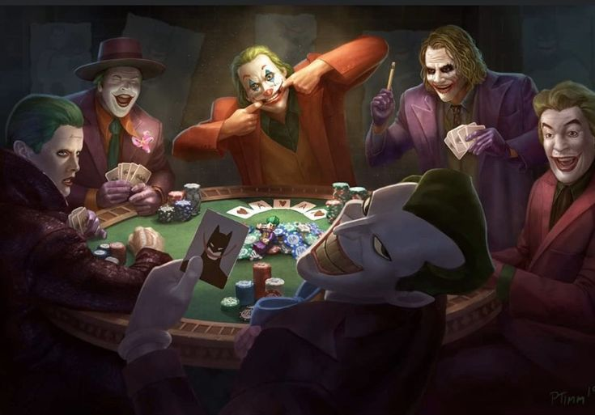

El Joker no tiene un origen fijo
Uno de los aspectos más fascinantes del Joker, el archienemigo de Batman, es que su historia de origen ha sido contada de múltiples formas… y ninguna es definitiva. Desde el comediante fracasado que cae en ácido en The Killing Joke hasta el terrorista anarquista de The Dark Knight, su pasado es un enigma.
Esta ambigüedad es parte de lo que lo hace tan aterrador. A diferencia de muchos villanos que tienen motivaciones claras, el Joker actúa por caos, locura o simplemente porque sí. No tiene un código moral, lo que lo convierte en un espejo oscuro de Batman, cuyo control y lógica son extremos.
En muchos relatos, el mismo Joker afirma no recordar quién fue realmente, o da versiones contradictorias de su pasado. Esta falta de certezas lo eleva a una figura casi mitológica dentro del mundo de los villanos, una presencia incontrolable que amenaza con destruir el orden por el simple placer de hacerlo.
← Volver a curiosidades de DC